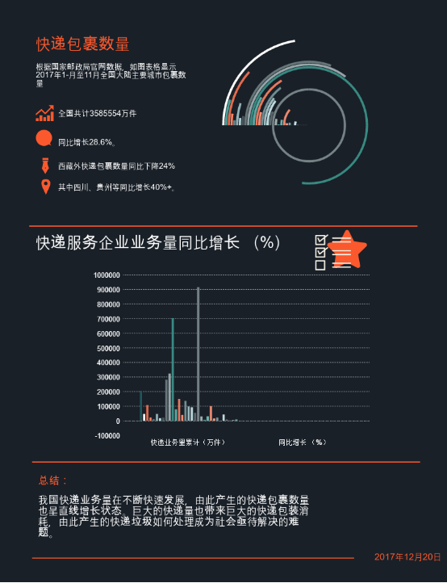
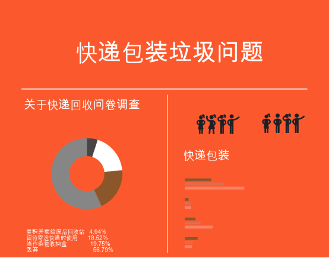
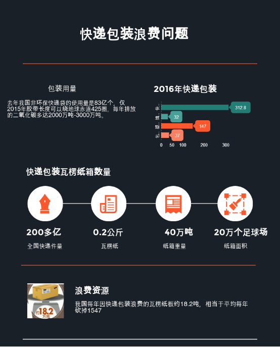
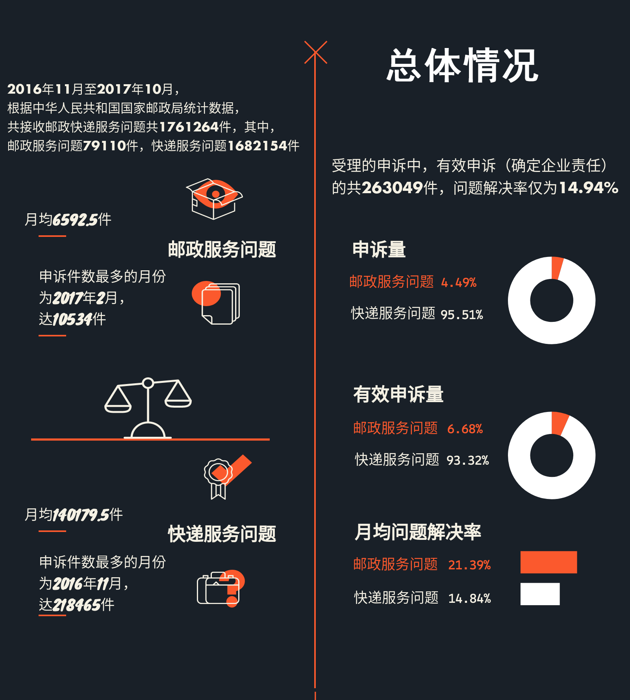
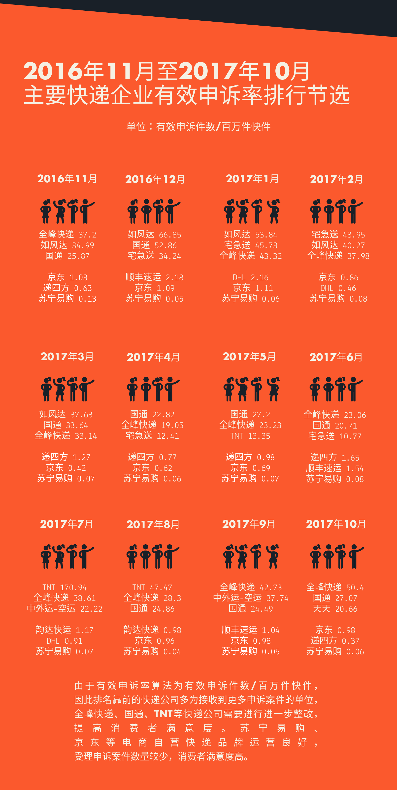

11月22日和23日，中通、申通快递公司官微分别发布《告客户书》，称“配合专项行动期间，北京地区的快件中转与寄递时效将会受到一定影响”。“专项行动”指北京大兴区11.18火灾两天后，北京市安全生产委员会以“厂房库房”“仓储物流”为重点的安全隐患排查整治行动。
未来的几天里，在遭遇了快递延迟、淘宝无法发货等糟糕经历后，我们才突然发现，不知何时已习惯于快递业发展带来的便利，却很少意识到，现在的我们几乎离不开快递。
邮政业是国家重要的社会公共事业，随着移动网络的普及与网购的发展，人们的日常生活中越来越离不开它。在市场经济发展和世界经济一体化进程日益加速的今天，中国邮政业面临着前所未有的发展机遇，也面临着更加严峻的挑战。
蓬勃发展的快递业
根据国家邮政局公布的数据显示，2017年1-11月份，邮政行业业务收入（不包括邮政储蓄银行直接营业收入）累计完成5968.8亿元，同比增长23.4%；业务总量累计完成8749.6亿元，同比增长32.3%。
1-11月，全国快递服务企业业务量累计完成358.6亿件，同比增长28.6%；业务收入累计完成4437.4亿元，同比增长25.2%。
<<<<<<< HEAD:再试一次.html ======= >>>>>>> 5342eca8faf9a3e343a323952e8a73495316c882:index.html ======= >>>>>>> 5342eca8faf9a3e343a323952e8a73495316c882:index.html
1-11月，东、中、西部地区快递业务量比重分别为81.1%、11.6%和7.3%，业务收入比重分别为80.9%、10.8%和8.3%。我国东部地区快递业较发达，其中江浙沪粤表现更为突出。

数据来源：国家邮政局统计数据
1-11月全国大陆主要城市包裹数量，全国共计3585554万件，同比增长28.6%。除西藏外快递包裹数量都由同比增长数额，其中四川、贵州等同比增长超过40%。
总体而言，我国目前快递业业务规模逐渐增长，效益呈逐步递增的态势。网络建设加强，结构、功能优化，快递网点分布范围更广，目前，国家邮政服务网络以实物处理网为节点，以干线运输和支线运输为连接，以营业网和投递网为终端，以信息网为支撑组成。网络内部按功能划分存在三个业务处理网：普通邮件网、快递（航空）邮件网，物流集散网，由此也进一步带动各省市的快递业务量逐步增加。
繁荣背后
然而，当我们绕到高速发展的繁荣背后，方兴未艾的快递业也存在很多问题。巨大的快递量也带来巨大的快递包装消耗，由此产生的快递垃圾如何处理成为社会亟待解决的难题。
除了可以回收的纸箱、一部分塑料袋之外，大部分快递包装都被当做人们的生活垃圾处理。塑料快递包装混在生活垃圾中，焚烧过程中对锅炉炉壁产生结焦，进行清洁炉壁会增加很大工作量。同时焚烧垃圾用炉原本可用5年，这样混合在一起焚烧只能用3年，每年增加成本300万。除此之外，这些被当做垃圾处理的塑料包装大多是由价格便宜、使用广泛的低密度聚乙烯构成，其中含有塑化剂、阻燃剂等有害物质，焚烧会产生二噁英，对大气污染也有一定影响。

数据来源：《2015中国快递领域绿色包装发展现状及趋势报告》
《2016中国快递领域绿色包装发展现状及趋势报告》
《2017中国快递领域绿色包装发展现状及趋势报告》
北京印刷学院青岛研究院副院长朱磊表示，中国包装垃圾的总体回收率小于20%，其中纸盒只有不到一半被回收。而快递包装中的填充物、胶带等塑料成分，回收率几乎为零。菜鸟网络的数据亦显示，去年我国非环保快递袋的使用量是83亿个，仅2015年胶带长度可以绕地球赤道425圈。每年排放的二氧化碳多达2000万吨-3000万吨。

另一方面，由于业务规模快速扩大、行业迅速扩张，大量良莠不齐的快递公司涌入业界，快递业又缺乏完善的行业规范，侵犯消费者权益的负面事件常有发生。2016年11月至2017年10月，月均快递申诉件数为140179.5件，申诉最多的月份可达218465件。快递服务申诉中，排名前三的问题是“投递服务”、“延误”和“快件丢失短少”。然而，受理的有效申诉中，问题解决率很低，仅为14.94%。


在主要快递企业中，苏宁易购、京东等电商自营快递品牌运营良好，确定为企业责任的申诉案件较少且稳定，少有物流快递公司能达到其水平。
站在岔口上
北京市11月20日起执行的安全隐患排查整治活动，也指向快速扩张的快递业行业规范缺失的另一个方面：快递网点、物流仓库管理粗放，存在安全隐患。为期40天的安全隐患大排查、大清理、大整治专项行动，在为快递业带来突如其来的凛冬的同时，也倒逼快递行业在井喷式的发展中停下脚步，做精做优，实现跨越式转型升级。
国家邮政局评价快递业发展时说：“我们不搞粗放的大跃进，要搞质效的大提升。”快递企业更加重视人才、更加重视技术、更加重视末端，这原本是业界的未来方向，却因一次意外而置于公众关注之下，愈发显得迫在眉睫。
现代社会，快递已成为一种生活方式，细密的快递网，如同奔流在钢铁森林中的血管，将城市与城市紧密相连，维持着共同的呼吸。我们每个人都身处这张网里，通过快递网的末梢与各地相连。快递业的健康、繁荣发展，与每个人息息相关。